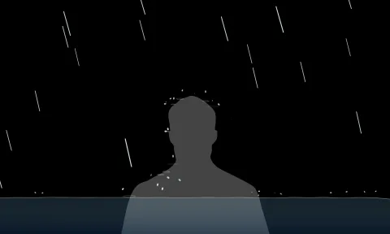
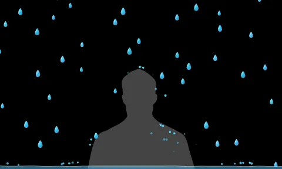
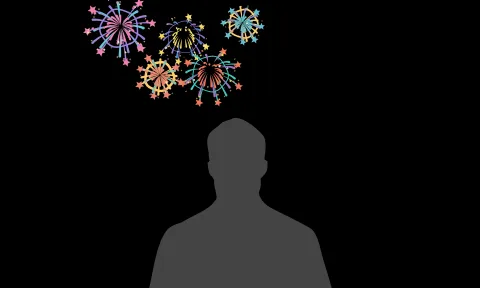

需求解析 Agent
把一个母版，拆成各地区可执行的资产需求。
- 输入
- 母版、目标文化大区、资产清单与交付规格。
- 任务
- 按交付要求拆分各地区的外观、动作与资产清单，形成需求说明（Brief）。
- 输出
- 分地区 Brief 与资产清单，传给 文化合规 Agent。
一份母版，覆盖 50 个文化大区；四类 Agent 协作，审核通过后交付。
按资产编号并行制作，按版本审核退修，由程序控制重试与成本。
四个 Agent 如何分工、数据如何流转，以及质量审核如何拦截。
把一个母版，拆成各地区可执行的资产需求。
把文化要求变成可追溯、可共用的约束。
首次写制作计划，获准退修后修改对应步骤。
独立检查实际成品，给出有证据的判定。
复用角色，并行生产。50 个文化大区共用四类 Agent，按资产清单拆成带编号的任务，由队列限制同时制作数；各资产可并行，同一资产按步骤依赖执行。需求与文化约束共同传给生成和审核，生成 Agent 编排工具调用，独立审核 Agent 负责放行。
不合格产物不能进入交付。对照需求与文化规则，检查几何穿插、材质、动作及宗教禁用元素，结合程序检测的面数、尺寸和文件大小。任一必检项不达标或无法确认合规，程序即隔离该版本；报告携带资产编号、问题位置与证据进入退修。只有当前版本全部通过，才解锁打包并交设计师。
生成编排 Agent 的系统提示词、JSON 调用契约，以及宗教违规符号的异常处理与重试规则。
系统提示词是预先写给生成 Agent 的固定工作规则；资产需求、文化约束与审核反馈则是每次任务的输入。
程序保障：启用结构化输出约束，并在执行前校验格式、工具权限和步骤依赖；格式错误仅允许修复一次，仍失败转人工，未经校验不调用工具。
这是生成 Agent 交给执行程序的 JSON 计划。tool 指定动作，model_ref 指定模型版本；程序将其转换为供应商请求，取得结果后再执行下一步。
negative_terms 是希望避免生成的元素清单；模型支持时映射为负向提示词，不支持时通过正向约束与产物审核处理。禁用规则为虚构示例，负向提示词不替代合规审核。
断路器是确定性程序，不是 Agent：被熔断的正是 Agent，不能由它自己判断是否陷入循环。
首次编排；或依据交回的审核问题报告，只改受影响的步骤，输出 JSON 计划。
队列按依赖调用工具，产出当前版本的成品与检查结果。
独立检查实际成品，判定通过或不通过。
本轮费用结算后，对照次数与预算上限判定。
汇总已通过的成品、源文件、预览及审核记录。
接收审核问题报告、历次产物与费用记录，由设计师与本地化负责人接管。
验收已审核、已整理的成品包。
审核不通过时，次数与预算都有余量就继续退修；任一条件命中，即触发断路器，转入后续止损。
持续退修仍未通过，说明自动修正已无效。上限在流程图中可调，首轮不计入。
每轮结算后核对，已达上限就不再授权下一轮，防止算力持续空转。
多为该地区的文化约束本身有误或冲突。暂停该地区未开始的任务，交人工复查规则；几何等与地区无关的问题不计入，其他地区照常生产。
极小语种地区：资料来源少、规则置信度低，默认收紧阈值，重试上限减半，首批产物全部人工复核。
审核不通过时由产物质量合规审核 Agent 输出，流程图中以同色标签标出。程序判定后，报告有两个去向：重试时交回生成编排与修正 Agent，只改受影响的步骤；触发断路器时随工单交异常人工复核，作为接管依据。check_id 为问题类型，示例为“几何体自相交”。
断路器触发后，只停这一个资产或地区，其余照常生产。
撤销该资产未执行的任务，不再调用任何模型。
保存历次计划、产物、审核报告与费用记录。
该地区先上线不含地域元素的通用版礼物，不拖累整体上线。
工单交设计师与本地化负责人，附失败摘要和最接近通过的版本。
人工修订规则或需求后，先放行一个任务，通过再恢复自动生产。
失败原因写回文化规则与提示词库，同类资产下次直接规避。
微笑触发雨滴，大笑触发烟花，粒子与人物轮廓实时碰撞。
参考真实烟花与雨水的运动规律，呈现自然的重力、拖尾与碰撞。

以 Emoji 般的圆润造型与 C4D 质感，营造贴近直播间的礼物氛围。

尝试轻松可爱的手绘表达，呼应 TikTok 直播与互动特效中的视觉语言。

AI把单测通过误当作浏览器可靠性保证：为切页恢复重构计时器，却因调用上下文错误卡死；又用轻量模型提速，造成识别抖动、迟钝和轮廓锯齿。
核心Prompt（据反馈提炼）：
“先停改功能，记录启动步骤与异常，修正原生计时器的接收者；复测首开、切页返回及失败重试。恢复原模型、表情阈值和轮廓精度，禁止以降低识别质量提速；只做无损压缩、图集复用与推理渲染解耦，并逐项核验微笑、大笑、头发及手部碰撞。”